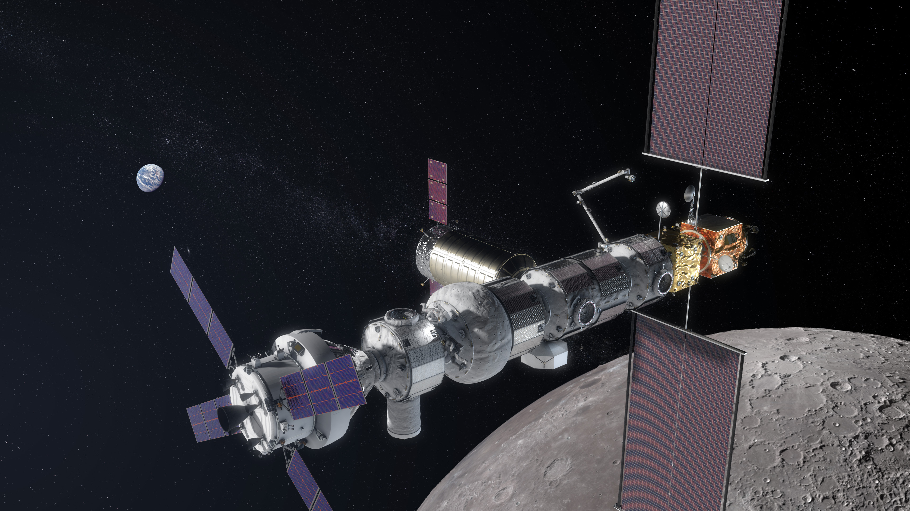
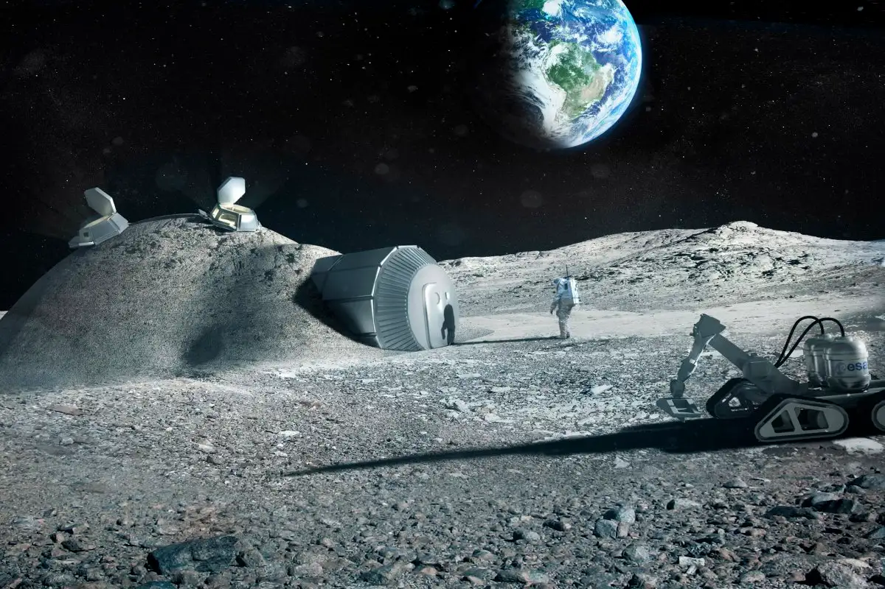

On the 21st of July, 1969, Apollo 11 sucesfully managed to land on the moon, allowing men, for the first time in the history of the planet, to walk in another stellar object. An estimated astounding 650 million people watched in awe, glued to the screen of their televisions as this legendary moment unfolded.
After that event, 5 more sucessful moon landings in which men would walk on the surface of the moon would happen, and after that, never again. For more than 50 years, mankind wouldn't return to the moon. But why is that? And why have scientists and astronomers finally changed their minds?
NASA plans on building several things on the moon, from lunar bases to extraction devices. However, the most important aspect to all this is the Lunar Gateway. It alone will allow passing spacescrafts to restock on not only fuel, but also on food and water for the crew so that their mission may last even longer. The gateway would then slingshot the spacecraft into their desired destination, using the moon's gravitational pull for assistance.
In short, the gateway would allow for even longer missions into space that would take place in the future.
"But why a lunar base?", you might ask.
The moon actually has ice water, burried on the surface of its poles, as depicted below. Such water can be transformed into hydrogen and oxygen, components that make rocket fuel. A moon base wouldn't need fuel to be delivered from Earth to it, it would be self-sufficient. Besides fuel, there's also many rare earth metals just waiting to be extracted, such as gold, platinum, and many more.

So there you have it. These are the two main reasons as to why we are returning to the moon, this time to stay.
If the idea of going to the moon excites you, we happen to have good news! By submitting your full name below, you will be allowed to participate in our partner raffle program. One lucky winner will be taken for a trip around the moon and back with the use of the rocket Artemis II.